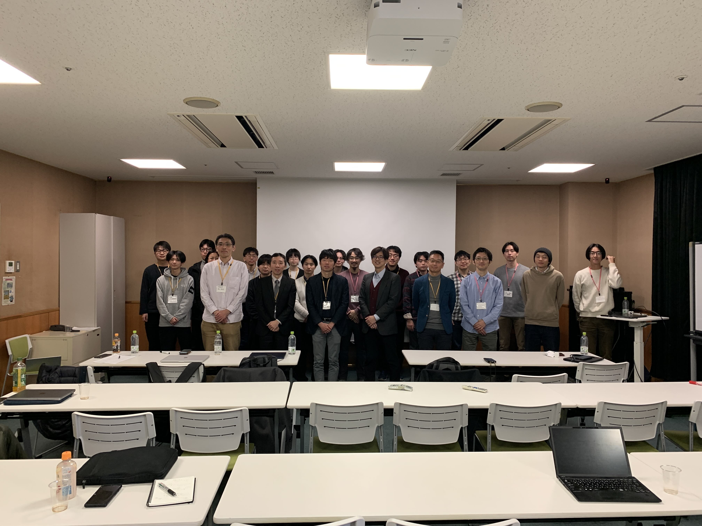
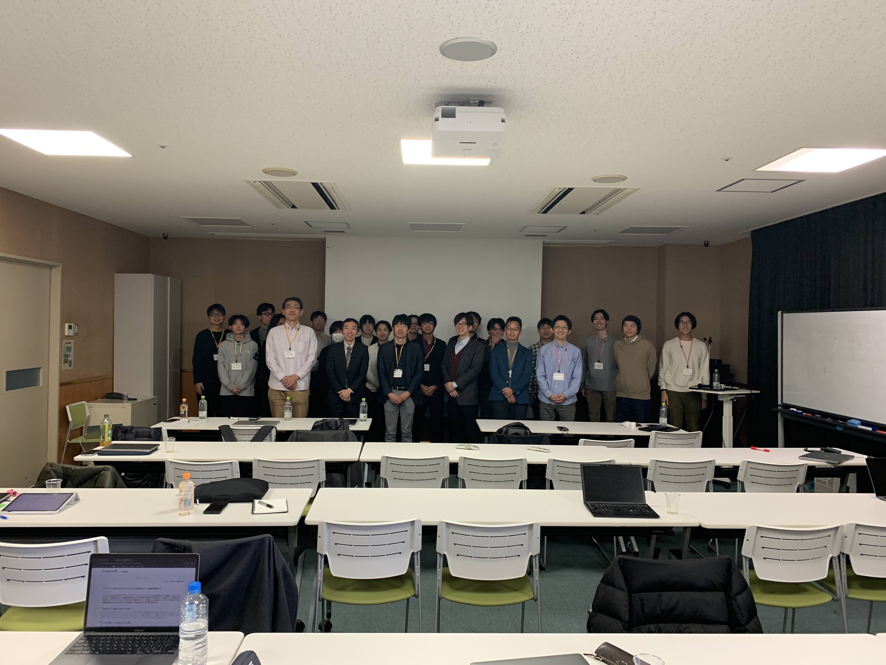
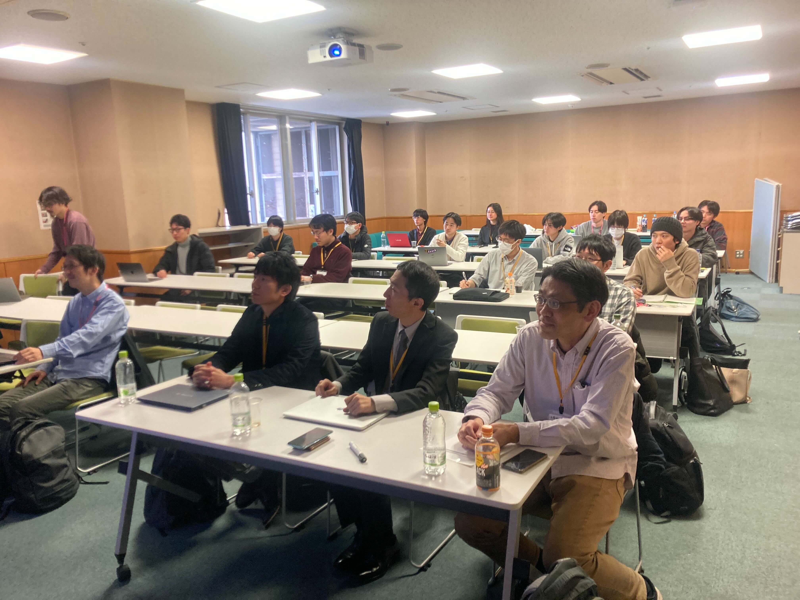

[告知]2026年7月29日(水) 第2回 数理脳科学若手の会 研究会
「神経科学における『良い理論』とは 〜原理 vs 数理モデル vs 大規模データ〜」
開催概要
本研究会では理論神経科学分野でご活躍する三名の先生をお招きして、招待講演およびパネルディスカッションを行います。当分野において研究の価値となる要素を考え、これからの研究に求められるものを具体的に議論することが目的です。
開催日時
2026年7月29日 (水) 13:00 - 17:30
開催場所
京都大学吉田キャンパス北部総合教育研究棟益川ホールおよびZoom (ハイブリッド開催)
プログラム
- 13:00 -- 14:00 磯村拓哉先生 (理化学研究所)
講演タイトル：TBA
- 14:10 -- 15:10 寺前順之介先生 (京都大学)
講演タイトル：TBA
- 15:20 -- 16:20 渡邉正峰先生 (東京大学)
講演タイトル：TBA
- 16:30 -- 17:30 パネルディスカッション
テーマ「神経科学における『良い理論』とは」
参加登録
当サイトで後日公開いたします。なお、参加費は無料です。
世話人
中牟田旭（京都大学）
[終了]2025年12月20日(土) 第1回 数理脳科学若手の会 研究会
「脳科学の継承と飛躍〜新たな理論を模索する世代の挑戦〜」
開催報告
詳細
本研究会には、現地では26名、オンラインでは12名が参加し、参加者の約7割が学部課程から博士課程までの学生でした。 現地参加者のうち6名は招聘講演者であり、若手研究者を中心とした対面・オンラインのハイブリッド形式で開催されました。
各講演では、質疑を含む50分の枠内で、脳や知能に関する研究成果の到達点と未解決課題、ならびに理論的アプローチとの協働の可能性が共有されました。 若手の数理研究者を主対象として募集したこともあり、質疑応答では数理的観点からの質問やコメントが多く寄せられました。 活発な意見交換により休憩時間に食い込む場面も見られましたが、円滑な進行にご協力いただいた皆様に改めて感謝いたします。
また、Zoom非公開で行われたパネルディスカッションでは、講演者同士が互いの研究や、理論研究の脳・神経科学における位置づけについて密度の高い意見交換を行いました。
本研究会は、現状の脳・神経科学を多様な視点から振り返り、今後の飛躍に向けた示唆を各参加者が持ち帰る機会となりました。



開催概要
本研究会では、今年度に終了した学術変革領域研究（A）のうち、脳に関する研究を展開してきた先生方を講師に迎え、各領域で得られた成果を振り返っていただきます。
そのうえで、現代の脳・神経科学における数理的アプローチの課題、およびその克服に向けた展望を議論します。
各領域の知見や独自の視点を、本研究会の主たる参加者である若手研究者と共有し、脳の理論的理解に向けた今後の方向性を共に探ります。
開催日時
2025年12月20日 (土) 8:50 - 17:00
開催場所
東京大学本郷キャンパス 医学部教育研究棟 13階 第5セミナー室、およびZoom (ハイブリッド開催)
プログラム
詳細
- 08:50 -- 09:00 開会挨拶
- 09:00 -- 12:00 各終了課題からのまとめ・振り返り (前半) [講演時間+質疑応答:50分, 休憩:10分]
- 09:00 -- 10:00 北西 卓磨 先生 (東京大学) 【区分Ⅳ:実世界の奥深い質感情報の分析と生成】
講演タイトル「海馬-嗅内野における空間情報処理の機構」
- 10:00 -- 11:00 小池 進介 先生 (東京大学) 【区分Ⅰ:生涯学の創出―超高齢社会における発達・加齢観の刷新】
講演タイトル「精神疾患の双方向トランスレーショナル研究」
- 11:00 -- 12:00 毛内 拡 先生 (お茶の水女子大学) 【区分Ⅲ:グリアデコーディング：脳-身体連関を規定するグリア情報の読み出しと理解】
講演タイトル「脳が生きているとはどういうことか：非シナプス的相互作用から考える」
- 12:00 -- 13:00 昼休憩
- 13:00 -- 16:00 各終了課題からのまとめ・振り返り (後半) [講演時間+質疑応答:50分, 休憩:10分]
- 13:00 -- 14:00 中茎 隆 先生 (九州工業大学) 【区分Ⅳ:分子サイバネティクス―化学の力によるミニマル人工脳の構築】
講演タイトル「化学の原理で動作する人工知能（ケミカルAI）～記憶や学習を化学反応系でどのように実現するか？」
- 14:00 -- 15:00 岡田 智 先生 (東京科学大学) 【区分Ⅱ:マテリアルシンバイオシスのための生命物理化学】
講演タイトル「分子レベルのfMRIに資する機能性造影剤の開発」
- 15:00 -- 16:00 金丸 隆志 先生 (工学院大学) 【区分Ⅲ:脳の若返りによる生涯可塑性誘導―iPlasticity―臨界期機構の解明と操作】
講演タイトル「臨界期におけるE/Iバランスと学習性能」
- 16:00 -- 17:00 パネルディスカッション テーマ「学際化する脳科学から読み解く、理論研究の役割と可能性」(パネリスト：北西先生, 小池先生, 中茎先生, 岡田先生, 金丸先生)
- 17:00 -- 17:10 閉会挨拶
- 18:00 -- 20:00 懇親会 (場所：天鴻餃子房 本郷店, 東京都文京区本郷4-1-5 石渡ビル 2F)
世話人
山田 泰輝 (東京大学), 田澤 右京 (京都大学, 理研CBS)
共催・協賛・スポンサー
本研究会は、学術変革領域研究（A）【予測と行動の統一理論の開拓と検証】からの後援を受けて、運営しております。
[終了]2025年07月14日(月) 第2回 数理脳科学若手の会 研究紹介ミーティング
開催概要
研究会メンバーの中牟田, 吉田が自身の研究を紹介します。
開催日時
2025年7月14日 (月) 17:00 - 17:40
開催場所
Zoom (オンライン開催)
プログラム
- 17:00 -- 17:20 中牟田 旭
- 17:20 -- 17:40 吉田 健祐
[終了]2025年06月23日(月) 第1回 数理脳科学若手の会 研究紹介ミーティング
開催概要
研究会メンバーの木下, 田澤, 山田が自身の研究を紹介します。
開催日時
2025年6月23日 (月) 17:00 - 18:00
開催場所
理化学研究所 脳神経科学研究センター 中央研究棟セミナー室C208、およびZoom (ハイブリッド開催)
プログラム
- 17:00 -- 17:20 木下 佑利
- 17:20 -- 17:40 田澤 右京
- 17:40 -- 18:00 山田 泰輝